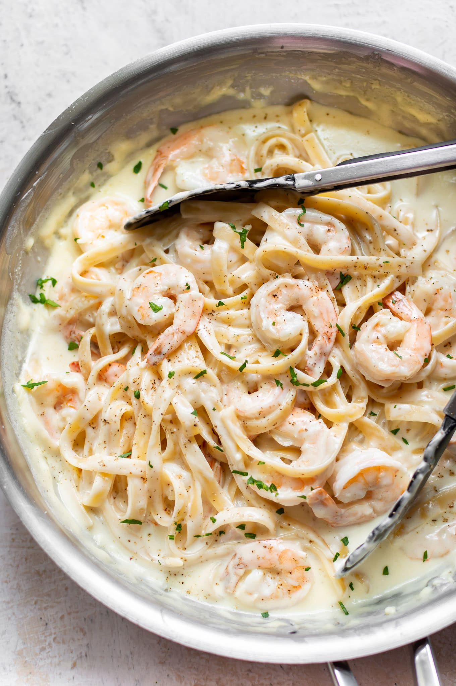

How To Cook Shrimp Alfredo

Ingredients:
Alfredo sauce:
- 1/2 cup butter
- 4 cloves garlic , finely minced
- 2 cups heavy cream
- 4 oz freshly grated Parmesan cheese (about 2 cups)
- Salt and pepper, to taste
- 1 lb fettucine noodles (or favorite kind of pasta)
For the Shrimp:
- 1.5 lbs large shrimp, thawed and peeled, tails optional
- 1 Tablespoon oil or butter
- fresh chopped parsley, for garnish (optional)
Instructions:
- Cook pasta according to package instructions. Drain and set aside.
- Grate parmesan cheese and set aside, to allow it to come to room temperature.
- Heat a large sauce pan over medium heat. Add butter and cook until melted. Add garlic, stirring frequently for 1 minute. Add cream and whisk to combine, bring to a simmer and cook for 3-4 minutes, stirring often.
- Turn heat to low and add parmesan cheese, whisking until smooth. Season with salt and pepper to taste. Add pasta and toss to coat.
- Season shrimp with salt and pepper. Melt 1 tablespoon butter or oil in a large skillet over medium high heat. Add shrimp and cook, stirring occasionally, until pink, about 2-3 minutes. Serve noodles with a scoop of shrimp on top. Garnish with fresh parsley, if desired.